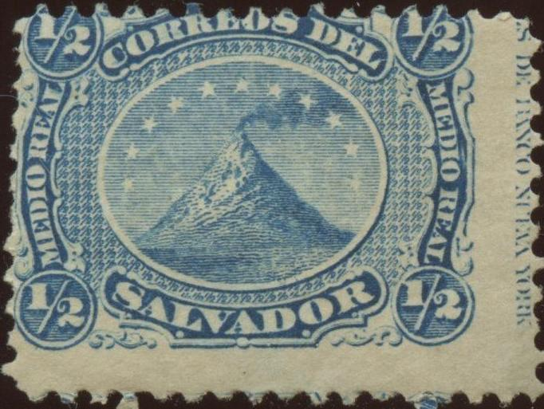
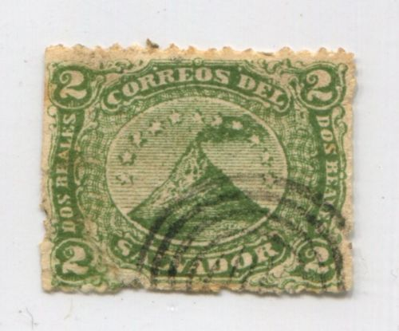
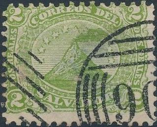
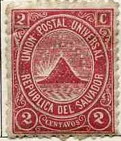
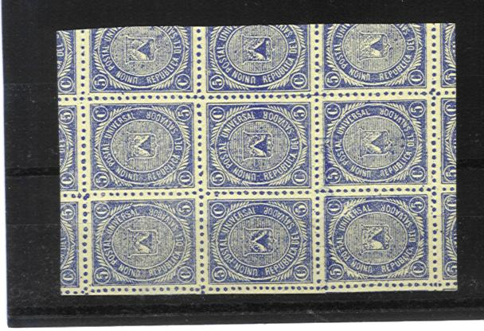
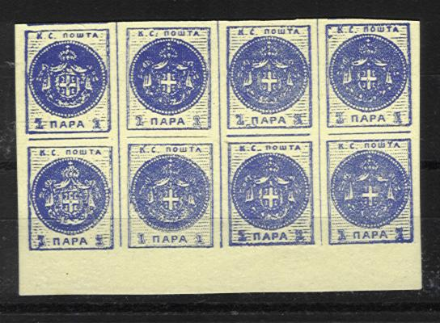
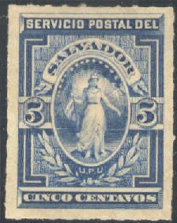
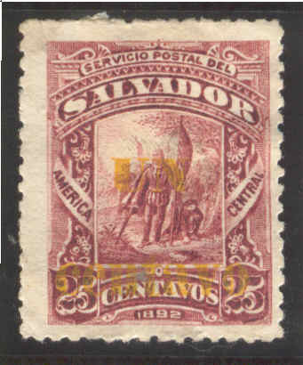
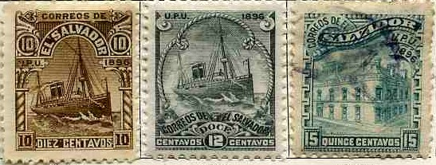
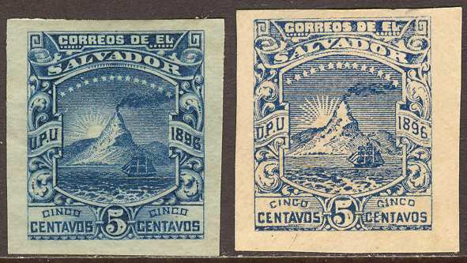

{kind=link}



Return To Catalogue - Salvador 1897-1920 - Miscellaneous
Note: on my website many of the
pictures can not be seen! They are of course present in the
catalogue;
contact me if you want to purchase it.
Note on the stamps of El Salvador from 1890 to 1899: The printer of the stamps (Seebeck) kept the printing plates of the stamps issued during this period. He issued numerous 'reprints' after the stamps were obsolete. These reprints are known as Seebeck issues.
A nice website with stamps of El Salvador can be found at: http://www.seymourfamily.com/Stamp_Collecting.htm
1/2 r blue 1 r red 2 r green 4 r brown Overprinted "CONTRA SELLO" in a circle (1874)

1/2 r blue 1 r red 2 r green 4 r brown
The overprint 'CONTRA SELLO' was applied to prevent stolen stamps from coming in the market. The 'CONTRA SELLO' overprint was used on later issues for telegraphic purposes. Two types should exist of this overprint: with closed letters and open letters.
Value of the stamps |
|||
vc = very common c = common * = not so common ** = uncommon |
*** = very uncommon R = rare RR = very rare RRR = extremely rare |
||
| Value | Unused | Used | Remarks |
| 1/2 r | * | c | |
| 1 r | * | * | |
| 2 r | * | ** | |
| 4 r | ** | *** | |
| Overprinted 'CONTRA SELLO', cheapest type | |||
| 1/2 r | *** | *** | |
| 1 r | *** | *** | |
| 2 r | *** | *** | |
| 4 r | R | R | |
Typical cancel:
(Star cancel, reduced size)
Forgeries exist of these stamps. For example, in the 1/2 r stamp, there should be many regular very small 1/2's in the background behind the central oval (see the Spud Papers). There is another crude forgery with correct '1/2's in the background (information obtained thanks to Bill Wagner). If anybody possesses more pictures of these forgeries, please contact me! Moreover, forged cancels exist.

(Forgery of the1 r, image obtained thanks to Bill Wagner, note
the weird cancel)

2 c forgery with the same cancel.
Forgery of the 1/2 r value. I've also seen it with part of a
numeral cancel ('8'?) in a pattern of horizontal lines.

Forgery of the 2 c value

Forgery of the 1 c value.
Information on forged "CONTRA SELLO" handstamps can be found at: http://www.seymourfamily.com/ElSalvadorHandbook/c3-b.pdf. Apparently, the stamp dealer David Cohn (Berlin, Germany) applied 'remainder' handstamps, which differ slightly from the genuine "CONTRA SELLO" marks. In turn, these remainder handstamps were forged again by Raoul de Thuin.



1 c green 2 c red 5 c blue 10 c black 20 c lilac Overprinted '1889' (2 types, with/without dot)
Sorry, no image available yet
1 c green 2 c red (overprint in violet) 20 c lilac
Value of the stamps |
|||
vc = very common c = common * = not so common ** = uncommon |
*** = very uncommon R = rare RR = very rare RRR = extremely rare |
||
| Value | Unused | Used | Remarks |
| 1 c | ** | * | |
| 2 c | ** | ** | |
| 5 c | *** | *** | |
| 10 c | *** | *** | |
| 20 c | *** | *** | |
| Overprinted | |||
| 1 c | ? | ? | |
| 2 c | ? | ? | |
| 20 c | ? | ? | |
Telegraph stamps; postage stamps with overprint "CONTRA SELLO", examples:
(Reduced sizes)

Two clearly different types of the 1 c: See the '1' and 'C' in
the corners for example, or the height at which the horizon cuts
the word 'SALVADOR'. There are 15 types of the 1 c and 2 c stamps
and 25 types of the 5 c stamps. The other values (10 c and 20 c)
exist in 5 types.

(Senf forgeries, with red overprint
'Facsimile')
Senf made forgeries of a whole sheet of 5 c blue stamps of the 1879 issue; all types are reproduced. The individual stamps always have a red overprint "Facsimile". On top of the sheet is written "Kunstbeigabe", they were distributed as an 'art supplement' with the 'Illustriertem Briefmarken Journal' (a stamp journal Senf issued) of 2 November 1889.
Imperforate 5 c value.
The next forgeries of Serbia are printed on the backside of some 5 c stamps of this issue:



Image obtained from
http://www.seymourfamily.com/Stamp_Collecting.htm


1 c green (with black bar, 1889) 2 c red (with black bar, 1889) 3 c brown 5 c blue (rouletted) Surcharged (1888)

Image obtained from
http://www.seymourfamily.com/Stamp_Collecting.htm
'1 centavo' on 3 c brown Surcharged and overprinted "1889" (2 types, with/without dot) 1 c green (with black bar on top) 3 c brown 5 c blue Surcharged and overprinted "1889" (2 types, with/without dot) '1 centavo' on 3 c brown

Unissued 2 c stamp
A 2 c red (without black bar) was unissued as well as a 1 c green (without black bar).
Value of the stamps |
|||
vc = very common c = common * = not so common ** = uncommon |
*** = very uncommon R = rare RR = very rare RRR = extremely rare |
||
| Value | Unused | Used | Remarks |
| 1 c | * | * | Without black bar: c |
| 2 c | * | * | Without black bar: c |
| 3 c | * | * | |
| 5 c | * | * | |
| 20 c | *** | *** | |
| Surcharged | |||
| 1 c on 3 c | * | * | |
| Overprinted '1889' | |||
| 1 c on 3 c | RR | RR | |
| 1 c | R | R | With black bar Also exists with violet overprint: R |
| 3 c | *** | *** | Also exists with violet overprint: *** |
| 5 c | *** | *** | Also exists with violet overprint: *** |

10 c orange Overprinted '1889'
(Sorry, no image available yet)
10 c orange
Value of the stamps |
|||
vc = very common c = common * = not so common ** = uncommon |
*** = very uncommon R = rare RR = very rare RRR = extremely rare |
||
| Value | Unused | Used | Remarks |
| 10 c | *** | ** | |
| 10 c | R | R | With 1889 overprint Also exists with violet '1889' overprint: R |
Mute cancels: 'concentric rings' and 'violet star'

1 c green 2 c brown 3 c yellow 5 c blue 10 c violet 20 c orange 25 c red 50 c red 1 P red
These stamps have perforation 12.
Value of the stamps |
|||
vc = very common c = common * = not so common ** = uncommon |
*** = very uncommon R = rare RR = very rare RRR = extremely rare |
||
| Value | Unused | Used | Remarks |
| 1 c | c | * | |
| 2 c | c | * | |
| 3 c | c | * | |
| 5 c | c | * | |
| 10 c | c | * | |
| 20 c | c | * | |
| 25 c | c | * | |
| 50 c | c | * | |
| 1 P | ** | *** | |
These stamps were printed by Seebeck, who made a large number of reprints. From 1890 to 1899, Seebeck produced for El Salvador 166 postage stamps, 152 Official stamps, 56 postage due stamps, five parcel post stamps, two acknowledgement of receipt stamps, and four registered mail stamps. (source: http://www.linns.com/howto/refresher/seebeck_20050613/refreshercourse.asp?uID= ).

1 c orange 2 c green 3 c violet 5 c red 10 c blue 11 c violet 20 c green 25 c brown 50 c blue 1 P brown Surcharged
'UN CENTAVO' on 2 c green '1 centavo' on 2 c green '5 CENTAVOS' on 3 c violet
These stamps have perforation 12. I have also seen the 2 c value with a very rough perforation.
Value of the stamps |
|||
vc = very common c = common * = not so common ** = uncommon |
*** = very uncommon R = rare RR = very rare RRR = extremely rare |
||
| Value | Unused | Used | Remarks |
| 1 c | c | c | |
| 2 c | c | c | |
| 3 c | c | c | |
| 5 c | c | c | |
| 10 c | c | c | |
| 11 c | c | * | |
| 20 c | * | * | |
| 25 c | * | * | |
| 50 c | * | * | |
| 1 P | c | ** | |
| Surcharged | |||
| 'UN CENTAVO' on 2 c | *** | *** | |
| '1 centavo' on 2 c | *** | *** | |
| 5 c on 3 c | *** | *** | |
A nice site dealing with this set of stamps can be found at: http://www3.mistral.co.uk/paper.heritage/articles/El-Salv-1891.html. These stamps were printed by Seebeck, who made a large number of reprints. According to the above mentioned website, it is not certain if the surcharged stamps were also reprinted or not by Seebeck.
Similar central design on an envelope issued in 1891 (however,
the outer design is elliptic); I've seen the values 2 c red, 10 c
green and 22 c brown.

1 c green 2 c brown 3 c blue 5 c grey 10 c orange 11 c brown 20 c orange 25 c red 50 c yellow 1 P red Surcharged

Images obtained from
http://www.seymourfamily.com/Stamp_Collecting.htm
'UN CENTAVO' (red or black) on 5 c grey
'UN CENTAVO' on 20 c orange
'UN centavo' (yellow or blue) on 25 c red
(The blue surcharge might be an essay!)
These stamps have perforation 12.
Value of the stamps |
|||
vc = very common c = common * = not so common ** = uncommon |
*** = very uncommon R = rare RR = very rare RRR = extremely rare |
||
| Value | Unused | Used | Remarks |
| 1 c | c | * | |
| 2 c | c | * | |
| 3 c | c | * | |
| 5 c | c | * | |
| 10 c | c | * | |
| 11 c | c | * | |
| 20 c | c | * | |
| 25 c | c | * | |
| 50 c | c | * | |
| 1 P | * | ** | |
| Surcharged | |||
| 1 c on 5 c | ** | ** | Red surcharge: *** |
| 1 c on 20 c | *** | *** | |
| 1 c on 25 c | *** | *** | |
I've seen a postcard in a similar design (1 c blue).

1 c blue 2 c red 3 c violet 5 c brown 10 c brown 11 c orange 20 c green 25 c black 50 c orange 1 P black Surcharged

Image obtained from
http://www.seymourfamily.com/Stamp_Collecting.htm
'UN CENTAVO' on 2 c red
These stamps have perforation 12.
Value of the stamps |
|||
vc = very common c = common * = not so common ** = uncommon |
*** = very uncommon R = rare RR = very rare RRR = extremely rare |
||
| Value | Unused | Used | Remarks |
| 1 c | c | c | |
| 2 c | c | c | |
| 3 c | c | c | |
| 5 c | c | c | |
| 10 c | c | c | |
| 11 c | c | c | |
| 20 c | * | c | |
| 25 c | c | c | |
| 50 c | c | c | |
| 1 P | c | * | |
| Surcharged | |||
| 1 c on 2 c | * | ** | |
(Reduced sizes)
2 P green 5 P violet 10 P orange
These stamps have perforation 12.
Value of the stamps |
|||
vc = very common c = common * = not so common ** = uncommon |
*** = very uncommon R = rare RR = very rare RRR = extremely rare |
||
| Value | Unused | Used | Remarks |
| 2 P | * | ** | |
| 5 P | * | *** | |
| 10 P | * | *** | |

Image obtained from
http://www.seymourfamily.com/Stamp_Collecting.htm
1 c brown 2 c blue 3 c red 5 c brown 10 c violet 11 c red 20 c blue 25 c orange 50 c black 1 P blue Surcharged

Image obtained from
http://www.seymourfamily.com/Stamp_Collecting.htm
'1 Centavo' on 11 c red
These stamps have perforation 12.
Value of the stamps |
|||
vc = very common c = common * = not so common ** = uncommon |
*** = very uncommon R = rare RR = very rare RRR = extremely rare |
||
| Value | Unused | Used | Remarks |
| 1 c | c | c | |
| 2 c | c | c | |
| 3 c | c | c | |
| 5 c | c | c | |
| 10 c | * | c | |
| 11 c | * | c | |
| 20 c | c | c | |
| 25 c | * | c | |
| 50 c | * | c | |
| 1 P | * | * | |
| Surcharged | |||
| 1 c on 11 c | *** | * | |


Images obtained from
http://www.seymourfamily.com/Stamp_Collecting.htm
2 P blue 5 P red 10 P brown
These stamps have perforation 12.
Value of the stamps |
|||
vc = very common c = common * = not so common ** = uncommon |
*** = very uncommon R = rare RR = very rare RRR = extremely rare |
||
| Value | Unused | Used | Remarks |
| 2 P | * | * | |
| 5 P | * | * | |
| 10 P | * | * | |

Image obtained from
http://www.seymourfamily.com/Stamp_Collecting.htm
1 c olive (arms green) 2 c green (arms blue) 3 c brown (arms brown) 5 c blue (arms brown) 10 c orange (arms brown) 12 c red (arms brown) 15 c orange (arms red) 20 c yellow (arms brown) 24 c violet (arms black) 30 c blue (arms blue) 50 c red (arms brown) 1 P brown (arms brown)
The values 3 c, 10 c and 30 c also exist without overprint:

Image obtained from
http://www.seymourfamily.com/Stamp_Collecting.htm
These stamps have perforation 12.
Value of the stamps |
|||
vc = very common c = common * = not so common ** = uncommon |
*** = very uncommon R = rare RR = very rare RRR = extremely rare |
||
| Value | Unused | Used | Remarks |
| 1 c | c | * | |
| 2 c | c | * | |
| 3 c | c | * | Without overprint: * |
| 5 c | c | * | |
| 10 c | * | ** | Without overprint: * |
| 12 c | c | ** | |
| 15 c | c | ** | |
| 20 c | c | ** | |
| 24 c | * | *** | |
| 30 c | * | *** | Without overprint: * |
| 50 c | c | *** | |
| 1 P | * | *** | |

1 c olive 2 c green 3 c brown 5 c blue 10 c orange 12 c red 15 c orange 20 c green 24 c violet 30 c blue 50 c red 1 P black Surcharged


Images obtained from
http://www.seymourfamily.com/Stamp_Collecting.htm
'UN centavo' on 12 c red 'UN centavo' (red) on 24 c violet 'UN centavo' (red) on 30 c blue 'DOS centavos' (red) on 20 c green 'TRES centavos' (red) on 30 c blue
These stamps have perforation 12.
Value of the stamps |
|||
vc = very common c = common * = not so common ** = uncommon |
*** = very uncommon R = rare RR = very rare RRR = extremely rare |
||
| Value | Unused | Used | Remarks |
| 1 c | * | * | |
| 2 c | c | * | |
| 3 c | * | * | |
| 5 c | c | c | |
| 10 c | c | * | |
| 12 c | c | ** | |
| 15 c | c | * | |
| 20 c | * | * | |
| 24 c | c | * | |
| 30 c | c | ** | |
| 50 c | c | *** | |
| 1 P | c | *** | |
| Surcharged | |||
| 1 c on 12 c | *** | *** | |
| 1 c on 24 c | *** | * | |
| 1 c on 30 c | *** | *** | |
| 2 c on 20 c | ** | ** | |
| 3 c on 30 c | *** | *** | |
1 c green 2 c brown 3 c orange 7 c blue 10 c orange 25 c brown 50 c grey 100 c green 200 c violet
(Sorry, no picture available yet)
5 c orange 10 c bleu 15 c orange 20 c orange 50 c green
1 c blue 2 c brown 3 c green 5 c olive 10 c yellow 12 c blue 15 c violet 20 c red 24 c orange 30 c orange 50 c brown 1 P red With overprint "CORREOS DE OFICIO DE EL SALVADOR" in black or violet (official stamps) 1 c blue 2 c brown 3 c green 5 c olive 10 c yellow 12 c blue 15 c violet 20 c red 24 c orange 30 c orange 50 c brown 1 P red With overprint "FRANQUEO OFICIAL" in an ellipse (official stamps) 1 c blue 2 c brown 3 c green 5 c olive 10 c yellow 12 c blue 15 c violet 20 c red 24 c orange 30 c orange 50 c brown 1 P red


1 c green (arms) 1 c orange (arms) 2 c red (building) 2 c green (building) 3 c brown (train, 2 shades) 5 c blue (volcano) 5 c orange (volcano) 10 c brown (ship) 10 c green (ship) 12 c violet (ship) 12 c blue (ship) 15 c green (building) 15 c black (building) 20 c red 20 c grey 24 c violet (waterfall) 24 c yellow (waterfall) 30 c green (arms) 30 c red (arms) 50 c orange (arms) 50 c violet (arms) 100 c blue (Columbus) 100 c brown (Columbus) Surcharged
'TRECE centavos' (red) on 24 c yellow 'TRECE centavos' on 30 c red 'TRECE centavos' on 50 c violet 'TRECE centavos' on 100 c brown 'Quince centavos' on 24 c violet With overprint "CORREOS DE OFICIO DE EL SALVADOR" in black or violet (official stamps)

I've been told that these overprints are forged
1 c green (arms) 1 c orange (arms) 2 c red (building) 2 c green (building) 3 c brown (train, 2 shades) 5 c blue (volcano) 5 c orange (volcano) 10 c brown (ship) 10 c green (ship) 12 c violet (ship) 12 c blue (ship) 15 c green (building) 15 c black (building) 20 c red 20 c grey 24 c violet (waterfall) 24 c yellow (waterfall) 30 c green (arms) 30 c red (arms) 50 c orange (arms) 50 c violet (arms) 100 c blue (Columbus) 100 c brown (Columbus) With overprint "FRANQUEO OFICIAL" in an ellipse (official stamps)

1 c green (arms) 1 c orange (arms) 2 c red (building) 2 c green (building) 3 c brown (train, 2 shades) 5 c blue (volcano) 5 c orange (volcano) 10 c brown (ship) 10 c green (ship) 12 c violet (ship) 12 c blue (ship) 15 c green (building) 15 c black (building) 20 c red 20 c grey 24 c violet (waterfall) 24 c yellow (waterfall) 30 c green (arms) 30 c red (arms) 50 c orange (arms) 50 c violet (arms) 100 c blue (Columbus) 100 c brown (Columbus)

Left: an imperforate 5 c stamp. Right: a rather crude forgery of
an imperforate 5 c stamp
For issues of Salvador from 1897 to 1920, click here.
{kind=link}
{kind=link}
{kind=link}
{kind=link}
{kind=link}